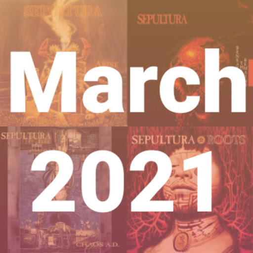

April 1, 2021

Sepultura: my favorite songs
aka My Personal Playlist: The Hits of March 2021
Listen on Spotify
I was very pleased to rediscover Sepultura after so many years. Being such an influential band in metal, it was only my duty to celebrate the 30th year anniversary of Arise.
So here it is, with a little surprise twist in the middle. Enjoy!
- Arise (Arise, 1991)
- Dead Embryonic Cells (Arise, 1991)
- Desperate Cry (Arise, 1991)
- Under Siege (Arise, 1991)
- Inner Self (Beneath the Remains, 1989)
- Mass Hypnosis (Beneath the Remains, 1989)
- Territory (Chaos A.D., 1993)
- Kaiowas (Chaos A.D., 1993)
- Roots Bloody Roots (Roots, 1996)
- Amazonia (Gojira, 2021)
- Kai Tangata (Alien Weaponry, 2018)
- Jasco (Roots, 1996)
- Against (Against, 1998)
- Sepulnation (Sepultura, 2001)
- Bullet the Blue Sky (Roorback, 2003)
- Spectrum (Kairos, 2011)
- Structure Violence Azzes (Kairos, 2011)
- Trauma of War (The Mediator Between Head and Hands Must Be the Heart, 2013)
- The Vatican (The Mediator Between Head and Hands Must Be the Heart, 2013)
- Impending Doom (The Mediator Between Head and Hands Must Be the Heart, 2013)
- Manipulation of Tragedy (The Mediator Between Head and Hands Must Be the Heart, 2013)
- Machine Messiah (Machine Messiah, 2017)
- I Am the Enemy (Machine Messiah, 2017)
- Phantom Self (Machine Messiah, 2017)
- Alethea (Machine Messiah, 2017)
- Sworn Oath (Machine Messiah, 2017)
- Cyber God (Machine Messiah, 2017)
- Isolation (Quadra, 2020)
- Guardians Of Earth (Quadra, 2020)
- Agony Of Defeat (Quadra, 2020)